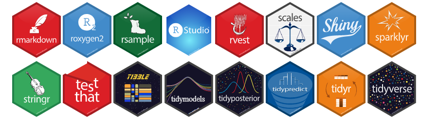
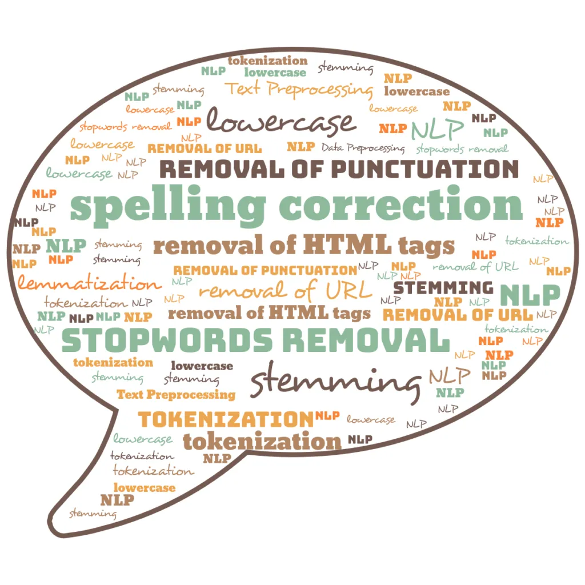
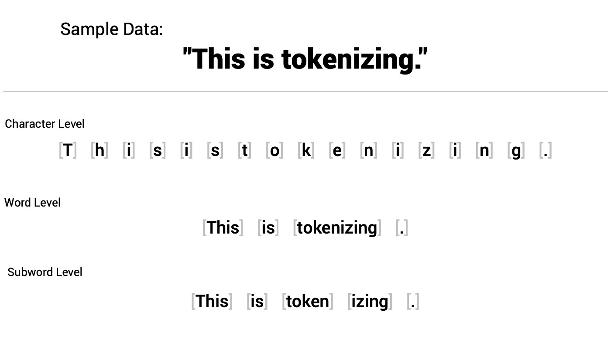

[04] Forbehandling av tekst 2

Solveig Bjørkholt <solveig.bjorkholt@stv.uio.no>
Plan for i dag:
- Litt repetisjon på anskaffelse av tekst
- Rydde og strukturere data (
stringrog regex) - Forbehandling - hvilke valg bør man ta?
- Tokenisering av tekst
- Vektorisering av tekst og word embeddings
Pakker vi skal jobbe med i dag
library(tidyverse) # Grunnleggende R-funksjoner
library(broom) # For å rydde opp i modell-output
library(rvest) # For å skrape informasjon fra nettet
library(tidytext) # Grunnleggende R-funksjoner for å jobbe med tekst
library(quanteda) # Mange metodiske verktøy for å jobbe med tekst
library(quanteda.textstats) # Brukes for å beregne distanse-mål
library(fastTextR) # For å jobbe med word embeddings

Laste inn data
Vi bruker data fra Martin sin kravling på http://virksommeord.no/
Martin lastet ned alle .html-filene med
tale i URL-en.
# Laster inn pakke for kravling
library(Rcrawler)
Rcrawler("http://virksommeord.no/", # Nettsiden vi skal kravle
DIR = "./crawl", # mappen vi lagrer filene i
no_cores = 4, # kjerner for å prosessere data
dataUrlfilter = "/tale/", # subset filter for kravling
RequestsDelay = 2 + abs(rnorm(1)))- Gå inn på Canvas
- Last ned
virksommeord.zipog legg i en mappe på din PC - Unzip filen
- Gå inn i R og sett working directory til mappen der du unzippet filen
Å laste ned data fra en
.html-fil
library(rvest) # Pakken som gjør at man kan jobbe med html-filer i R
html_fil <- read_html("./data/virksommeord/1 .html")
overskrift <- html_fil %>%
# Les inn den første filen fra mappen
html_node("h1") %>%
# Finn alle nodene som inneholder "h1" (h1 for "heading 1")
html_text()
# Hent ut teksten fra disse nodene
metadata <- html_fil %>%
html_node("#left-of-sidebar > div.main-content > div.tale-header > ul") %>%
html_text()
tale <- html_fil %>%
html_nodes("p") %>%
# Finn alle nodene som inneholder "p" (p for "paragraph")
html_text()## [1] "Åtte krav for prostituerte"## [1] "\r\n\t\t\t\tKatharina Sass\r\n\t\t\t\t\r\n\t\t\t\t\r\n\t\t\t\tDigital 1. mai-markering\r\n\t\t\t\t1. mai 2020\r\n\t\t\t\t\r\n\t\t\t\t\r\n\t\t\t"## [1] "Kilde: www.kvinnefronten.no"
## [2] "Kjære alle som feirer 1.mai i dette korona-året 2020. "
## [3] "Jeg er Katharina Sass, medlem i Kvinnefronten i Bergen, og jeg har i mange år vært aktivist mot prostitusjon både her i Norge og i mitt hjemland Tyskland."
## [4] "Vi som kjemper for at også menneskerettighetene til prostituerte kvinner og andre mennesker i prostitusjon blir respektert, vi står overfor store utfordringer i disse tider. Korona-krisen har nemlig gjort at det har blitt innført prohibisjon i mange land. Dvs. at kvinner og andre i prostitusjon blir kriminalisert, de risikerer å bli straffet hvis de fortsetter å selge sex til tross for korona."
## [5] "I Tyskland har allerede flere kvinner fått bøter opp til 5000 euro for å ha solgt sex i disse siste ukene. Jeg vet ikke om noe slikt har skjedd i Norge. Men hvis det er tilfelle så vil vi i Kvinnefronten gjerne vite det, slik at vi kan hjelpe. Det er nemlig helt forkastelig å bøtelegge kvinner i prostitusjon, uansett korona."
## [6] "Hvorfor det? Vel, spør dere selv: Hvem er det som selger sex nå midt under en pandemi? Det er jo de mest fortvilte, de som virkelig ikke har noe annet valg. Og de har svært ofte ikke tilgang til sosialhjelp eller helsehjelp. Mange har ikke lovlig opphold, de er helt avhengig av hallikene sine, de har ikke noe sted å bo annet enn bordellene eller leilighetene der prostitusjon foregår. Mange har barn i sine hjemland som de må forsørge. Mange er også avhengige av narkotika. Noen har kanskje lovlig opphold, men har ingen nettverk utenfor prostitusjonsmiljøet som de kunne ha brukt, som kunne ha hjulpet dem i denne situasjonen."
## [7] "Så vi som er aktivister mot prostitusjon har derfor 8 veldig enkle krav til våre regjeringer. Og det gjelder både her i Norge og i Tyskland og internasjonalt:"
## [8] "1.Gi mennesker i prostitusjon husly gratis. For eksempel på hoteller eller ungdomsherberger som uansett står tomme nå. Sørg for at de i hvert fall ikke må overnatte på bordellene eller i leilighetene der de blir utnyttet. For da blir de enda mer avhengig av sine halliker."
## [9] "2.Gi mennesker i prostitusjon ubetinget sosialhjelp. En kvinne som har blitt misbrukt av utallige menn i Norge eller i Tyskland eller hvor hun nå oppholder seg, hun bør ikke måtte tigge om å få sosialhjelp i det landet. Det bør være en selvfølge at hun får det. Og som et akutt tiltak bør hun få finansiell krisehjelp nå, og det inkluderer også å få betalt reise hjem til sitt hjemland eller sine barn, for de som ønsker det i dagens situasjon."
## [10] "3.Gi mennesker i prostitusjon tilgang til gratis, frivillig og ukomplisert helsehjelp."
## [11] "4.Gi mennesker i prostitusjon tilgang til gratis mat og hygieneprodukter."
## [12] "5.Invester mye mer i hjelpetiltak som legger opp til å få kvinnene og andre ut av prostitusjon og som gir reelle alternativer. Det er helt feil å stenge ned hjelpetiltak, eller gjøre dem om til telefontjenester nå under konorakrisen. Det er helt uansvarlig, for da når man ikke frem til de aller svakeste. Så dette må åpnes opp igjen så fort som mulig. Gjerne med smitteverntiltak, men det må åpnes opp igjen."
## [13] "6.Gi mennesker i prostitusjon ubetinget oppholdstillatelse nå."
## [14] "7.Kriminaliser mennene som fortsetter å kjøpe sex til tross for korona. Kriminaliser bordelleierne og hallikene som fortsetter å utnytte mennesker i prostitusjon. I Norge er sexkjøp og bordellvirksomhet heldigvis forbudt uansett, men i Tyskland og mange andre land er ikke dette tilfellet. Så da er Koronakrisen faktisk en mulighet til å innføre sexkjøpslov og forbud av bordellvirksomhet."
## [15] "Og så til det aller aller viktigste:"
## [16] "8.Mennesker i prostitusjon må aldri kriminaliseres eller straffes. I prostitusjon er det hallikene og bordelleierne og kjøperne som har makten, det er ikke de prostituerte. Og derfor må loven alltid stå på de prostituerte sin side. Å være fattig, fortvilt og i tillegg offer for seksuell vold, for det er jo det sexkjøp er, er ikke noen forbrytelse, ikke under korona-tider heller. Derfor krever vi at alle lover og regler som kriminaliserer prostituerte nå trekkes tilbake med en gang."
## [17] "Takk for meg"
## [18] "Virksomme ord støttes av Fritt ord og administreres av institutt for informasjons- og medievitenskap ved Universitetet i Bergen"
## [19] "Vi har 2566 taler i databasen"For-løkke: Laster inn data fra alle .html-filene i mappen
filer <- list.files("./data/virksommeord/", full.names = TRUE)
# List opp alle filene i mappen virksommeord, med full filsti
overskrifter <- list() # Lag en tom liste som vi kan fylle opp
metadata <- list()
taler <- list()
for (i in seq_along(filer)) { # For hver enhet (i) i objektet filer...
html_fil <- read_html(filer[i]) # ... les inn nr. i av filene med read_html()
overskrifter[i] <- html_fil %>% # ... og i overskrift-listen, fyll opp plass nr. i med ...
html_node("h1") %>% # ... den første noden som har tag "h1"
html_text() # ... sin tekst
metadata[i] <- html_fil %>%
html_node("#left-of-sidebar > div.main-content > div.tale-header > ul") %>%
html_text()
taler[i] <- read_html(filer[i]) %>%
html_nodes("p") %>%
html_text() %>%
str_c(., collapse = " ") # Her limer vi sammen alle avsnittene til en tekst med " " som mellomrom
}taler_df <- tibble(overskrift = overskrifter, # Lag en variabel kalt "overskrift" med innholdet fra "overskrifter"-objektet
metadata = metadata,
tekst = taler) %>% # Lag en variabel kalt "tekst" med innholdet fra "taler"-objektet
unnest(cols = c(overskrift, metadata, tekst)) # Gjør dem om fra liste til vanlige vektorer
# write.table(taler_df, file = "./data/taler_df.txt", fileEncoding = "UTF-8") # For å lagre lokaltOm du ikke får til for-løkken, bruk:
taler_df <- read.table("https://www.dropbox.com/s/2dkmn0z64z1b4rt/taler_df.txt?dl=1",
fileEncoding = "UTF-8") %>%
as_tibble()OBS: kan ta litt tid + krever internett.
Det endelige datasettet
- Hva er analyseenheten her?
## # A tibble: 100 x 3
## overskrift metadata tekst
## <chr> <chr> <chr>
## 1 Åtte krav for prostituerte "\r\n\t\t\t\tKa~ "Kil~
## 2 Gi oss sjansen til å gjøre de store og viktige jobbene "\r\n\t\t\t\tRa~ "Kil~
## 3 Enhver Krænkelse bør ophøre "\r\n\t\t\t\tPe~ "Kil~
## 4 Vi kan alle gjøre en forskjell "\r\n\t\t\t\tEr~ "Kil~
## 5 Skape og dele "\r\n\t\t\t\tRo~ "Kil~
## 6 Ærefulde og sikrende Vilkaar "\r\n\t\t\t\tLo~ "Kil~
## 7 Riksrådsforhandlingene VI "\r\n\t\t\t\tJa~ "Kil~
## 8 Å bevare freden for vårt eget land "\r\n\t\t\t\tHa~ "Kil~
## 9 Vi har gjennomskuet Israels krigspropaganda "\r\n\t\t\t\tOl~ "Kil~
## 10 Vi skaper verdier og fordeler rettferdig "\r\n\t\t\t\tRo~ "Kil~
## # ... with 90 more rowsForbehandling av tekst
- Del 1: Rydde og strukturere
- tidyverse-funksjoner + regex
- Del 2: Preprosesseringsvalg
- Tokenisering
- Sette til liten bokstav
- Fjerne punktsetting og symboler
- Fjerne tall
- Fjerne stoppord
- Stemming og lemmatisering
- Fjerne svært sjeldne ord
- Del 3: Vektorisering (fra tekst til tall)
- Sekk med ord
- TF-IDF
- Word embeddings

Rydde og strukturere
- Vi må ofte rydde og strukturere i tekst for å få det datasettet vi trenger
- regex er spesielt nyttig i slike tilfeller
Spesielle tegn i regex
| Tegn | Betydning |
|---|---|
| \ | Brukes for å omgå et tegn som betyr noe i regex |
| ^ | Starten på en streng |
| $ | Slutten på en streng |
| . | Passer til et hvilket som helst tegn |
| | | Passer til forrige ELLER neste tegn/gruppe |
| ? | Passer null eller én av de forrige |
| * | Passer til null, én eller flere av de forrige |
| + | Passer til en eller fler av det forrige |
| ( ) | En gruppe tegn |
| [ ] | Passer til et sett av tegn |
| { } | Passer til et spesifikt antall av forekomster av det forrige |
- Bruker en blanding av
stringr-pakken og regex for å opprette nye variabler.
taler_df <- taler_df %>%
mutate(taler = str_extract(metadata, "[A-ZÆØÅa-zæøå]+\\s+[A-ZÆØÅa-zæøå]+"),
# To ord med først stor bokstav så små boksaver og whitespace (mellomrom) mellom
dato = str_extract(metadata, "([0-9]+\\. [a-z]+)? [0-9]{4}"),
# Henter ut tall fulgt av punktum, så bokstaver, så fire tall (f. eks. 1. desember 2020)
aar = str_extract(dato, "[0-9]{4}"),
# Henter ut fra variabelen "dato" første segment med fire tall etter hverandre
tekst = str_remove(tekst, "Kilde: "),
# Overskriver tekst-variabelen, og fjerner første gang "Kilde: " dukker opp fra alle tekstene.
tekst = str_squish(tekst),
overskrift = str_squish(overskrift))
# Fjerner all "støy" fra teksten (f. eks. linjeskift \n)Noen stringr funksjoner
eksempel <- " Pakken stringr har mange nyttige funksjoner. \n De kan brukes for å rydde og strukturere tekst."
substr(eksempel, 1, 5) # Hent ut deler av en streng (her fra posisjon 1 til posisjon 5)
str_length(eksempel) # Sjekk hvor mange tegn som finnes i en streng
str_c(eksempel, " Blant annet.") # Putt sammen to strenger. (Samme funksjon som paste og paste0)
str_to_upper(eksempel) # Gjør alle bokstaver til store bokstaver
str_to_lower(eksempel) # Gjør alle bokstaver til små bokstaver
str_to_title(eksempel) # Gi alle ord en stor forbokstav og deretter små bokstaver
str_to_sentence(eksempel) # Gi alle setninger en stor forbokstav og deretter små bokstaver
str_detect(eksempel, "nyttige") # Sjekk om mønsteret er en del av strengen
str_subset(eksempel, "nyttige") # Hent ut de strengene fra listen som har et spesifikt mønster
str_locate(eksempel, "nyttige") # Undersøk hvor i en streng et spesifikt mønster er
str_extract(eksempel, "nyttige") # Hent ut kun deler av strengen som passer til et spesifikt mønster
str_remove(eksempel, "nyttige") # Fjern fra en streng alle steder som passer til et spesifikt mønster
str_replace(eksempel, "nyttige", "vanskelige") # Erstatt deler av en streng med noe annet
str_trim(eksempel) # Fjern whitespace fra foran og bak en streng
str_squish(eksempel) # Fjern whitespace fra foran, bak og inni en streng
str_split(eksempel, "\n") # Lag en liste av strenger ved å splitte dem på et spesifikt mønster (her linjeskift, \n)Preprosesseringsvalg
Hvilke av disse burde vi gjøre? 🤔
- Sette til liten bokstav
- Fjerne punktsetting og symboler
- Fjerne tall
- Fjerne stoppord
- Stemming og lemmatisering
- Fjerne svært sjeldne ord
Analysen kan være sensitiv til forbehandlingsvalg

Denny & Spirling (2018) foreslår en framgangsmåte for å teste sensitivitet til forbehandlingsvalg:
preText
Finner “outliers” - hvor ulik blir en tekst de andre tekstene med en viss preprosessering?
- Bruker en “distance metric” (som vi skal se mer på senere i emnet)
- Rangerer dokumentparene som er mest ulike og genererer preText scores utfra dette.
- Kan dermed lage en regresjonslikning for å måle hvilket preprosesseringssteg som har mest innvirkning på tekstene.
Dessverre er ikke preText tilgjengelig lenger, men vi
kan bruke intuisjonen videre:
- Hvor mye endrer analysen seg når man gjør et visst preprosesseringssteg?
To ulike preprosesseringssteg:
- Liten bokstav: Ja
- Fjerne punktsetting og symboler: Ja
- Fjerne tall: Ja
- Fjerne stoppord: Ja
- Stemming: Ja
- Fjerne sjeldne ord: Ja (minst 15 %)
taler_dfm1 <- taler_df %>%
group_by(overskrift, aar) %>% # Grupperer på overskrift og aar (sistnevnte fordi vi skal bruke aar senere)
unnest_tokens(., # Fra det gjeldende datasettet...
output = token, # ... lag tokens kalt "token"
input = tekst, # ... fra variabelen kalt "tekst"
token = "words", # ... og la dette være unigram
to_lower = TRUE, # Sett alle bokstaver til små
stopwords = quanteda::stopwords("no"), # Fjern stoppordene i denne stoppord-lista
strip_punct = TRUE, # Fjern punktsetting
strip_numeric = TRUE) %>% # Fjern tall
mutate(token = quanteda::char_wordstem(token, language = "norwegian")) %>% # Lag ord-stammer
count(token) %>% # Tell opp frekvens av token per dokument
cast_dfm(., document = overskrift, term = token, value = n) # Lag en document feature matrix
taler_dfm1 <- dfm_trim(taler_dfm1, min_docfreq = 0.15, docfreq_type = "prop") # Fjern ord som dukker opp svært sjelden- Liten bokstav: Ja
- Fjerne punktsetting og symboler: Ja
- Fjerne tall: Ja
- Fjerne stoppord: Nei
- Stemming: Ja
- Fjerne sjeldne ord: Ja (minst 15 %)
taler_dfm2 <- taler_df %>%
group_by(overskrift, aar) %>%
unnest_tokens(.,
output = token,
input = tekst,
token = "words",
to_lower = TRUE,
#stopwords = quanteda::stopwords("no"),
strip_punct = TRUE,
strip_numeric = TRUE) %>%
mutate(token = quanteda::char_wordstem(token, language = "norwegian")) %>%
count(token) %>%
cast_dfm(., document = overskrift, term = token, value = n)
taler_dfm2 <- dfm_trim(taler_dfm2, min_docfreq = 0.15, docfreq_type = "prop")# Lag to dataframes med informasjon om distanse mellom dokumenter og gi distanse-variabelen nye navn i hvert objekt for å kunne sette dem sammen
dist1 <- as.dist(textstat_dist(taler_dfm1)) %>% tidy() %>% rename(distance1 = distance)
dist2 <- as.dist(textstat_dist(taler_dfm2)) %>% tidy() %>% rename(distance2 = distance)
diff_data <- left_join(dist1, dist2, by = c("item1", "item2")) # Sett sammen de to dataframene
diff_data %>%
mutate(differanse = distance1 - distance2) %>% # Lag en variabel med differansen mellom distansemålet i det første datasettet og i det andre
group_by(item1) %>% # Grupper på første dokument
summarise(gjennomsnittlig_differanse = mean(differanse)) %>% # Finn gjennomsnittlig differanse til de andre dokumentene
mutate(item1 = fct_reorder(item1, desc(gjennomsnittlig_differanse))) %>% # Ranger slik at den med høyest differanse kommer øverst
ggplot(aes(x = item1, y = gjennomsnittlig_differanse)) + # Plot dokument mot gjennomsnittlig differanse
geom_segment(aes(x = item1, xend = item1, # Lag et "lollipop"-diagram
y = 0, yend = gjennomsnittlig_differanse),
color="black") +
geom_point(color = "blue", size = 2) +
coord_flip() +
theme_bw()Gjennomsnittlig endring i distanse-mål med og uten stoppord
Problemstillingsspesifikk sjekk
- Hvor mye forskjellen ligger på, kommer også an på problemstillingen / forskningsspørsmålet og hypotesene
- For eksempel:
“Hvor forskjellige er taler fra hverandre i ulike år?”
- H1: Taler fra da Norge var nytt og selvstendig vil ha større forskjeller fra hverandre enn Norge som etablert nasjon.
ant_taler <- taler_df %>%
group_by(aar) %>%
count() # Tell opp hvor mange dokumenter som opptrer innenfor hvert år
diff_data %>% # Plot dette i et søylediagram
left_join(taler_df, by = c("item1" = "overskrift")) %>%
mutate(differanse = distance1 - distance2) %>%
group_by(aar) %>% # Grupper på år og ...
summarise(gjennomsnittlig_differanse = mean(differanse)) %>% # ... finn gjennomsnittlig differanse per år
left_join(ant_taler, by = "aar") %>% # Få med informasjon om hvor mange taler det var det året
ggplot(aes(gjennomsnittlig_differanse, aar)) +
geom_bar(stat = "identity") +
geom_text(aes(label = n, x = -10), color = "white") + # Plasser informasjonen om antall taler i søylen på søylediagrammet
labs(x = "Gjennomsnittlig endring", y = "") +
theme_bw()Gjennomsnittlig endring i distanse-mål med og uten stoppord per år
Tokensiering

- Enhetene: Dokumenter (bøker, rapporter, tweeter, setninger…)
- Variablene: Tokens (ord, bokstaver, setninger…)
Eksempel med setninger som dokument og ord som variabler:
| Dokument | vi | har | sett | havet | er | enormt | større | enn | begriper |
|---|---|---|---|---|---|---|---|---|---|
| vi har sett havet vi | |||||||||
| havet er enormt | |||||||||
| større enn vi begriper |
Fjerning av stoppord med bigram
bigrams_separated <- taler_df %>%
ungroup() %>%
unnest_tokens(input = tekst,
output = bigram,
token = "ngrams",
n = 2) %>%
separate(bigram, c("ord1", "ord2"),
# Separer variabel "bigram" inn i to variabler, "ord1" og "ord2"
sep = " ") # Separerer på mellomrom
stoppord <- stopwords::stopwords("no")
# Finner norske stoppord fra "stopwords" pakken
bigrams_filtered <- bigrams_separated %>%
filter(!ord1 %in% stoppord) %>%
# Filtrerer ut stoppord fra variabel "ord1" (utropstegn betyr "ikke")
filter(!ord2 %in% stoppord)
# Filtrerer ut stoppord fra variabel "ord2"
bigrams_filtered %>%
select(overskrift, ord1, ord2) %>%
head(3)## # A tibble: 3 x 3
## overskrift ord1 ord2
## <chr> <chr> <chr>
## 1 Åtte krav for prostituerte www.kvinnefronten.no kjære
## 2 Åtte krav for prostituerte feirer 1
## 3 Åtte krav for prostituerte 1 maiVektorisering
- Enhetene er dokumenter, variablene er tokens. Hva er verdiene?
- Kan være for eksempel:
- sekk med ord (bag of words)
- TF-IDF
- word embeddings
Eksempel på vektorisering med sekk med ord:
Sekk med ord (bag of words, BoW)
Frekvensen av ord per dokument, dvs. antall ganger et ord forekommer per dokument.
| Dokument | vi | har | sett | havet | er | enormt | større | enn | begriper |
|---|---|---|---|---|---|---|---|---|---|
| vi har sett havet vi | 2 | 1 | 1 | 1 | 0 | 0 | 0 | 0 | 0 |
| havet er enormt | 0 | 0 | 0 | 1 | 1 | 1 | 0 | 0 | 0 |
| havet er større enn vi begriper | 1 | 0 | 0 | 1 | 1 | 0 | 1 | 1 | 1 |
Eksempel på vektorisering med TF-IDF:
TF-IDF: (Term Frequency Inverse Document Frequency):
Et vektet antall ganger ord forekommer per dokument.
| Dokument | vi | har | sett | havet | er | enormt | større | enn | begriper |
|---|---|---|---|---|---|---|---|---|---|
| vi har sett havet vi | 0 | 0.16 | 0.16 | 0 | 0 | 0 | 0 | 0 | 0 |
| havet er enormt | 0 | 0 | 0 | 0 | 0.14 | 0.37 | 0 | 0 | 0 |
| havet er større enn vi begriper | 0 | 0 | 0 | 0 | 0.07 | 0 | 0.18 | 0.18 | 0.18 |
Word embeddings
Grimmer, Roberts & Stewart (2022, p. 79): “The core insight of distributional representations is to represent a word as a dense vector in a low-dimensional space learned from unlabeled data.”
Med andre ord:
- Vi unngår å måtte lage datasett med ekstremt mange variabler (også kalt “dimensjoner”) (low-dimensional space).
- Fordi vi representerer ord annerledes slik at vi unngår mange nuller i kolonnene (dense vector).
- Siden algoritmen er ikke-veiledet (“unsupervised”), så trenger vi ikke ferdig-klassifisert data (labeled data).
- Algoritmen lærer utfra tanken om at et ords verdi kan representeres utfra ordfordelingen den opptrer i (distributional representations).
Word embeddings
Fordelingshypotesen: Ord som opptrer i samme kontekst har samme mening.
“You shall know a word by the company it keeps” (Firth, 1957)
Ordene plasseres i et vektorrom (vector space) med like mange dimensjoner som vi har “kontekster”, og måler ordenes retning etter hvor hyppig de opptrer i samme kontekst.
Tre fordeler med word embeddings
1. De gir et estimat på likhet.
I en vektorrommet vil ord med liknende mening peke i samme retning, og stå i forhold til nabo-ord.

2. De muliggjør automatisk generalisering.
Vi trenger ikke ha alle ordene i vårt datasett, siden word embeddings gjør at vi automatisk vet hvilke ord som likner.
For eksempel:
- Vi ønkser å bruke et datasett på twitterutsagn under koronapandemien for å hvordan positivitet og negativitet endrer seg mellom kommuner.
- Datasettet har 1000 rader (dvs. observasjoner, altså dokumenter, som i vårt tilfelle er tweeter).
- Ordet “fantastisk” dukker aldri opp i tweetene, men det gjør ordet “bra”.
- Vi trener word embeddings på hele den norske Wikipedia. Modellen skjønnet at ordene “bra” og “fantastisk” likner hverandre.
- Vi kan trekke linjen at når ordet “bra” regnes som positivt, så gjør også ordet “fantastisk” det.
3. De kan (til dels) måle et ords mening.
- Mening i dette tilfellet betyr at ordene dukker opp i samme kontekst.
- Slik kan vi vurdere variasjon i mening (f. eks. mellom land eller over tid).
State of the Union taler (Grimmer et al., 2022):
- Manifacturing før 1960: exportation, oil-related, energy-intensive, import/export, defense-related
- Manifacturing etter 1960: retooling, jobs, offshoring, outsources, globalized, low-skilled, retraining
Word embeddings - datasett
- Vi kan lage egne datasett med word embeddings.
- Disse er gjerne trent på veldig store mengder tekst.
- Vi kan enten lage egne datasett med word embeddings, eller bruke allerede eksisterende data.
Word embeddings - datasett
Designvalg i word embeddings:
- Datakilde: Word embeddings bør være trent på tekst som er innenfor samme “domenefelt”.
- Størrelse på kontekstvindu: Hva som menes med “nærliggende” ord må defineres.
- Dimensjonalitet: Flere dimensjoner gir mer kompleksitet, typisk har vi et sted mellom 50 og 500.
- Valg av algoritme:
- Latent semantisk analyse
- Nevrale ord-embeddings (continous bag of words (CBOW) og skipgram-modellen)
- Ferdigtrente embeddings (
word2vec,GloVe,fastText)
Lager word embeddings med fastTextR
Flere pakker for å lage word embeddings, f. eks.
word2vec, GloVe og fastTextR
- Eksempel med
fastTextR - Obs: krever en spesiell form for preprosessering, se script fra forelesning for å se hvordan
ft_cbow <- ft_train(taletekster,
type = "cbow", # Finn word embedding med CBOW
control = ft_control(window_size = 5L)) # La modellen lære fra de fem nærmeste ordene
ft_skipgram <- ft_train(taletekster,
type = "skipgram", # Finn word embeddings med skipgram
control = ft_control(window_size = 5L)) # La modellen lære fra de fem nærmeste ordeneLager word embeddings med fastTextR
- Bruker
ft_word_vectorsfor å finne målet på ordene. - Her for ordene “godt” og “norge” på dimensjon 1, 2, 3, 4, og 5.
Lager word embeddings med fastTextR
- Bruker
ft_nearest_neighborsfor å finne hvilke ord som likner mest.
tibble(ord = names(ft_nearest_neighbors(ft_cbow, "norge", k = 5L)),
score = ft_nearest_neighbors(ft_cbow, "norge", k = 5L))## # A tibble: 5 x 2
## ord score
## <chr> <dbl>
## 1 norges 0.619
## 2 daglig 0.386
## 3 fader 0.363
## 4 kostet 0.304
## 5 styrelse 0.303Synes du dette virker som en god modell?
Word embeddings med ferdigtrent data fra FastText

Word embeddings med ferdigtrent data fra FastText
pretrained <- ft_load("./data/cc.no.300.bin")
# Hvis du ønsker å laste ned ferdigtrente word embeddings til din PC, kan du finne Fasttext sine her: https://fasttext.cc/docs/en/crawl-vectors.html
tibble(ord = names(ft_nearest_neighbors(pretrained, "norge", k = 5L)),
score = ft_nearest_neighbors(pretrained, "norge", k = 5L))## # A tibble: 5 x 2
## ord score
## <chr> <dbl>
## 1 sverige 0.581
## 2 norge. 0.565
## 3 usa 0.553
## 4 trondheim 0.541
## 5 oslo 0.540Validering av word embeddings
- Vurder utfra din egen problemstilling - hvor god er tekstrepresentasjonen for din analyse?
- Kan vurdere hvor mye ordene likner på hverandre utfra dokumentmassen med ordlikhetsanalyser, f. eks. cosine.
- Kan bruke menneskekodere for å validere hvor vidt de helst velger maskin- eller menneskevalgte ord som mest likt et gitt ord.
Det nyeste innen word embeddings
Kontekstualisert word embedding
- BERT (Bidirectional Encoder Representations from Transformers)
- GPT-3 (Generative Pre-trained Transformer)
Men: Krever enormt mye prosessorkraft, og kan både være dyrt (kjører gjerne modellen i skyen) og tidkrevende (dager, uker eller til og med måneder).
Takk for i dag :)